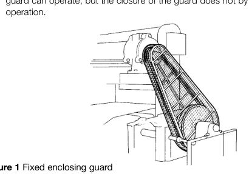
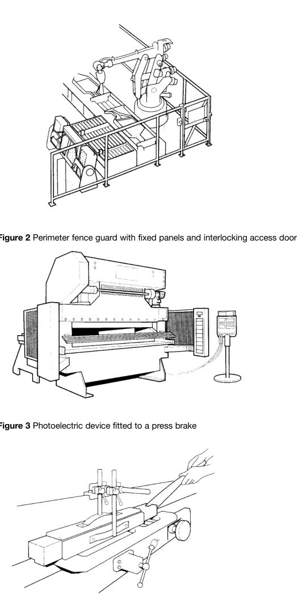

The original, as published: Health and Safety Executive, Safe use of work equipment (L22), Appendix 1: Further guidance on regulation 11. Open Government Licence v3.0, https://www.nationalarchives.gov.uk/doc/open-government-licence/version/3/. Imported as published, from https://www.hse.gov.uk/pubns/priced/l22.pdf https://www.hse.gov.uk/pubns/priced/l22.pdf
1 Guards are physical barriers which prevent access to the danger zone. Fixed
guards in regulation 11(2)(b) have no moving parts and are fastened in a constant
position relative to the danger zone (see Figure 1). They are kept in place either
permanently, by welding for example, or by means of fasteners (screws, nuts etc)
making removal/opening impossible without using tools. If by themselves, or in
conjunction with the structure of the equipment, they enclose the dangerous parts,
fixed guards meet the requirements of the first level of the hierarchy. Note that fixed
enclosing guards, and other types of guard, can have openings provided that they
comply with appropriate safe reach distances (see BS EN ISO 13857).42
2 Other guards in regulation 11(2)(b) include movable guards which can be
opened without the use of tools, and fixed guards that are not fully enclosing. These
allow limited access through openings, gates etc for feeding materials, making
adjustments, cleaning etc (see Figure 2). Movable guards may be power-operated,
self-closing, adjustable etc and are likely to require an interlocking device so that: (a) the hazardous machine functions covered by the guard cannot operate until
the guard is closed;
(b) if the guard is opened while hazardous machine functions are operating, a
stop instruction is given;
(c) when the guard is closed, the hazardous machine functions covered by the
guard can operate, but the closure of the guard does not by itself initiate their

Figure 1 Fixed enclosing guard Interlocking guards may be fitted with a locking device so the guard stays closed
and locked until any risk of injury from the hazardous machine functions has
passed. A control guard (interlocking guard with a start function) is a particular type
of interlocking guard which should be used only in certain situations where frequent
access is required. It should also fulfil specific conditions, in particular, where there
is no possibility of an operator or part of their body remaining in the danger zone or
3 Protection devices do not prevent access to the danger zone but stop the
movement of the dangerous part before contact is made. They will normally be
used in conjunction with a guard. Typical examples are mechanical trip devices,
active opto-electronic devices such as light curtains (see Figure 3), pressure-
sensitive mats and two-hand controls.
4 Protection appliances are used to hold or manipulate in a way which allows
operators to control and feed a loose workpiece at a machine while keeping their
body clear of the danger zone. They are commonly used in conjunction with
manually fed woodworking machines (see Figure 4) and some other machines such
as bandsaws for cutting meat where it is not possible to fully guard the cutting tool.
These appliances will normally be used as well as guards.
5 Adequate information, instruction, supervision and training are always
important, even if the hazard is protected by hardware measures, however, they
are especially important when the risk cannot be adequately eliminated by the
hardware measures in regulation 11(2)(a)–(c). It may be necessary to lay down
procedures to define what information, instruction, training and supervision must be
given, and to restrict use of the equipment to those who have received such
instructions etc.
6 The guidance outlines how the hierarchy in regulation 11(2) should be applied
in selecting safeguarding measures. Within each level of the hierarchy, there may be
some choice available. In particular, the second level in the hierarchy allows a
choice from among a number of different types of guard or protection device.
7 Regulation 11(2)(b) requires that when it is not practicable to use fixed
enclosing guards, either at all or to the extent required for adequate protection,
other guards and/or protection devices shall be used as far as practicable. Where,
for example, frequent access is required, it may be necessary to choose between
an interlocking movable guard or a protection device. The foreseeable probability
and severity of injury will influence the choice of measures from among the range of
guards and protection devices available. Regulation 11(3)(a) requires that these
must be suitable for their purpose. It is likely that some fixed guarding will be
required to ensure that access can only be made through the movable opening
guard or protection device. The use of movable guards which are interlocked is well
established. Protection devices need to be carefully applied, taking into account the
particular circumstances and consequences of their failing to act as required.
8 Fixed distance guards, adjustable guards and other guards which do not
completely enclose the dangerous parts should only be used in situations where it
is not practicable to use fixed enclosing guards or protection devices which would
give a greater level of protection.
Regulation 11(3)(a)
9 All guards and protection devices provided must be suitable for their purpose.
In deciding what is suitable, employers should first establish the foreseeable risks
from the machine and then follow guidance contained in national and international
standards guidance from HSE and industry associations, normal industrial practice
and their own knowledge of the particular circumstances in which the machine is to
be used. You can find further information on the HSE website

Figure 2 Perimeter fence guard with fixed panels and interlocking access door
Figure 3 Photoelectric device fitted to a press brake
Figure 4 A push stick in use at a woodworking machine
10 A protection device or interlocking system should be designed so that it will
only operate as intended. Furthermore, if a component deteriorates or fails, the
device or system should as far as possible fail in a safe manner by inhibiting the
dangerous action of the machine. The force of this requirement depends on the
combination of probability of failure and severity of the injury, should the system fail.
If the overall risk is high, there should be adequate provision to counteract the
effects of failure. Guidance on appropriate levels of protection is given in the
publications referred to in paragraph 9 of this Appendix. Regulation 11(3)(b)
11 Guards and protection devices must be of good construction, sound material
and adequate strength. They must be capable of doing the job they are intended to
do. Several factors can be considered: (a) construction material (metal, plastic, laminated glass etc);
(b) form of the material (sheet, open mesh, bars etc);
(c) method of fixing.
12 Good construction involves design and layout as well as the mechanical
nature and quality of the construction. Foreseeable use and misuse should be
taken into account. Regulation 11(3)(c)
13 Guards and protection devices must be maintained in an efficient state, in
efficient working order and in good repair. This is an important requirement as
many accidents have occurred when guards have not been maintained. It is a
particular example of the general requirement under regulation 5 to maintain
equipment. Compliance can be achieved by the use of an effective check
procedure for guards and protection devices, together with any necessary follow-
up action. In the case of protection devices or interlocks, some form of functional
check or test is desirable.
14 For inspection and thorough examination of power presses and their guards
and protection devices, see Safe use of power presses. Regulation 11(3)(d)
15 Guards and protection devices must not themselves lead to any increased risk
to health or safety. One effect of this sub-paragraph is to prevent use of inherently
hazardous measures for guarding.
16 A second effect is that guards must be constructed so that they are not
themselves dangerous parts. If a guard is power operated or assisted, the closing
or opening action might create a potentially dangerous trap which needs secondary
protection, for example a leading-edge trip bar or pressure-sensitive strip.
17 The main concern is the overall effect on risk. The fact that a guard may itself
present a minor risk should not rule out its use if it can protect against the risk of
major injury. For example, sweep-away guards or manually-actuated sliding access
gates might be able to cause minor injury, but their use in guarding against more
serious risks is justified. Regulation 11(3)(e)
18 Guards and protection devices must be designed and installed so that they
cannot be easily bypassed or disabled. This refers to accidental or deliberate action
that removes the protection offered. By regulation 11(3)(a), guards must be suitable
for their purpose, and one consequence of this is that simple mechanical bypassing
or disabling should not be possible.